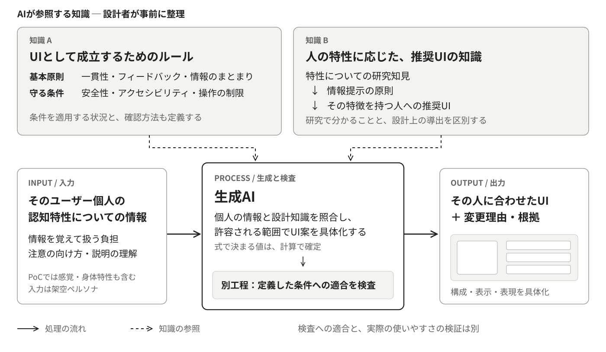
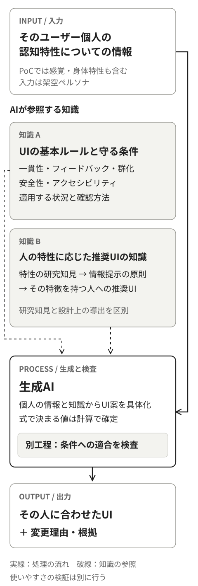
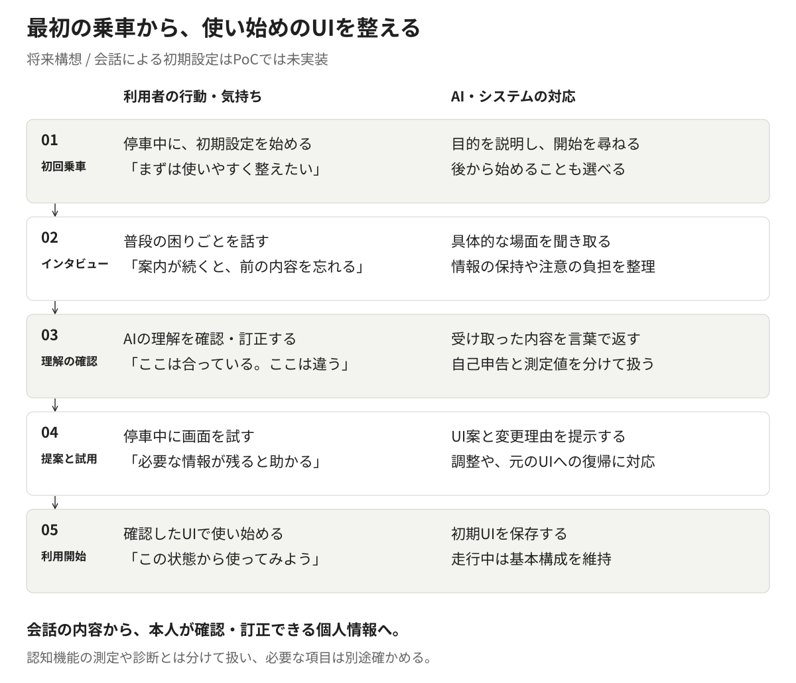

Optimisation individuelle de l’interface par la conception sous contraintes
Août 2026
Vue d’ensemble
Ce travail propose un mécanisme qui reçoit des informations personnelles sur les caractéristiques cognitives de quelqu’un et génère une interface ajustée à cette personne, en s’appuyant sur les principes fondamentaux de conception d’interface, sur les exigences de sécurité et d’accessibilité, et sur les résultats de recherche portant sur les caractéristiques humaines.
Il met en œuvre l’idée que j’appelle conception sous contraintes : l’humain conçoit les conditions à tenir et leur domaine d’application, et à l’intérieur de ce cadre l’IA générative élabore la proposition concrète. En prenant pour sujet un système de navigation automobile, j’ai réalisé une preuve de concept qui génère des interfaces à partir de treize personas fictifs — caractéristiques sensorielles et physiques comprises — et vérifie la conformité aux conditions dans une étape distincte.
Dans la comparaison, un cas a montré une modification nette de la composition de l’écran, due à une caractéristique physique, tandis que la plupart des sorties ne présentaient pas de changement visuel important. L’utilisabilité et la sécurité réelles restent à vérifier, mais le travail a mis au jour jusqu’où le jugement peut être confié à l’IA générative, et quelles conditions de conception réduisaient la marge d’individualisation.
Contexte — jusqu’où une seule interface peut-elle aller ?
La plupart des produits conçoivent et livrent une interface commune, destinée au plus grand nombre. Mais la quantité d’information que l’on saisit d’un coup, la facilité à orienter son attention, la clarté des formulations, la précision des gestes fins varient d’une personne à l’autre. Une interface qui tient compte de beaucoup de gens ne convient pas pour autant à telle personne en particulier.
L’évaluation au niveau du groupe a elle aussi ses limites. Dans les lignes directrices facultatives publiées en 2013 par la NHTSA américaine, chaque critère d’acceptation portant sur les regards demande qu’au moins 21 participants sur 24 le satisfassent. Ce n’est pas une condition signifiant que tout le monde peut s’en servir de la même façon. [1]
Même dans les produits où la taille du texte ou la quantité affichée sont modifiables, il faut que la personne remarque l’existence du réglage, le relie à sa propre difficulté et choisisse l’ajustement adéquat. Ces réglages resteraient-ils sous-utilisés, laissant les gens avec une interface qui ne leur convient pas ? C’est de cette question que tout est parti.
Dans un système de navigation, regarder l’écran et le manipuler entrent en concurrence avec l’attention qu’exige la conduite. [1] Si une interface mal ajustée peut alourdir cette charge, alors préparer dès le début un état qui convient à la personne mérite examen, du côté de l’utilisabilité comme de la sécurité.
L’IA générative permet désormais de prototyper une étape qui élabore une interface à partir d’informations personnelles et de connaissances de conception. D’où l’idée de livrer une interface ajustée à chacun tout en allégeant la charge de dessiner chaque écran à la main, personne par personne.
Le taux d’utilisation réel de ces réglages, et l’effet d’une interface mal ajustée sur les accidents, n’ont pas été examinés dans ce projet.
Proposition — relier les informations personnelles à deux sortes de connaissances de conception
Ce que l’on saisit, ce sont des informations sur les caractéristiques cognitives de l’utilisateur. L’IA les confronte à deux corpus de connaissances préparés à l’avance : l’un contenant les règles fondamentales de conception d’une interface, l’autre reliant les caractéristiques humaines aux interfaces qu’elles appellent.
Sur cette base, l’IA élabore l’interface dans les limites permises, et la conformité aux conditions est vérifiée. La sortie, c’est l’interface ajustée à la personne, accompagnée de l’explication de ce qui a été changé et pourquoi.


Entrée : les informations sur la personne
Par exemple : la facilité à retenir et manipuler plusieurs informations à la fois, la sensibilité aux stimuli qui détournent l’attention, le type d’explication le plus facile à suivre. La mise en œuvre a également couvert la vision et la motricité fine des doigts. L’écran n’est pas décidé à partir d’un diagnostic ; ce que l’on traite, ce sont les informations personnelles qui touchent à l’usage de l’interface.
Connaissances A : les règles pour qu’une interface tienne
On rassemble les principes fondamentaux de conception : cohérence, retour d’information sur les actions, regroupement de l’information, lisibilité du texte et des cibles tactiles. S’y ajoutent les restrictions d’usage propres aux interfaces embarquées et les exigences d’accessibilité, définies avec les situations où elles s’appliquent.
Connaissances B : des caractéristiques vers l’interface qu’elles appellent
Les caractéristiques humaines établies par la recherche sont reliées à des principes de présentation de l’information, puis à la conception de l’interface. À une caractéristique comme « retenir une information tout en agissant représente une charge » répond la direction « réduire ce qu’il faut mémoriser », qui conduit à des conceptions gardant à l’écran les informations nécessaires.
La recherche sur une caractéristique ne fournit pourtant pas telle quelle une valeur de conception pour un système de navigation. Ce que la recherche établit est distingué des décisions de conception que ce projet en a tirées. Les améliorations qui profitent également à tout le monde relèvent des règles de base et ne comptent pas comme un résultat de l’individualisation.
L’expérience visée — vérifier ensemble ce qui convient, dès le premier trajet
Projection. La configuration initiale par la conversation n’est pas implémentée dans cette preuve de concept.
On achète une voiture et l’on s’assoit pour la première fois au volant. À l’arrêt, un agent IA interroge sur la manière dont on s’en sert. Au lieu de parcourir des réglages techniques, on raconte ce qui pose habituellement problème et ce que l’on trouve facile à utiliser.

-
Premier trajet : engager la conversation
IA« Pour adapter l’écran à votre usage, pourriez-vous me dire quelques mots sur votre façon de vous en servir ? Nous pouvons aussi le faire plus tard. »
La personne comprend l’objectif et choisit de commencer maintenant ou plus tard.
-
Entretien : parler de ses difficultés
IA« Quand les indications s’enchaînent, à quels moments cela devient-il difficile à suivre ? »
Utilisateur« Quand l’indication suivante arrive, il m’arrive d’oublier ce qui venait d’être dit. »
L’IA interroge sur des situations concrètes et met en ordre les difficultés qui touchent à la rétention de l’information et à l’orientation de l’attention.
-
Vérification : la personne peut corriger ce que l’IA a retenu
IA« Il vous conviendrait donc mieux que les informations nécessaires restent à l’écran, plutôt que d’avoir à retenir les étapes — est-ce bien cela ? »
La personne confirme ou corrige cette lecture. Ce qu’elle déclare en conversation reste distinct des mesures de fonctions cognitives et des diagnostics ; là où une mesure est nécessaire, un autre moyen de l’établir est prévu.
-
Proposition et essai : entendre la raison, essayer l’écran
IA« Pour alléger ce que vous devez garder en tête, je propose un écran où l’action en cours et l’étape suivante sont visibles ensemble. »
À l’arrêt, la personne essaie par exemple le choix d’une destination. Elle peut dire « c’était plus clair avant » ou « ici, je changerais les mots », et la proposition peut être ajustée, ou l’interface d’origine rétablie.
-
Début de l’usage : se servir de l’interface validée
L’interface validée par la personne est enregistrée comme état initial. En roulant, la structure de base qu’elle a apprise reste inchangée. Si elle souhaite y revenir, elle peut réajuster à l’arrêt.
Le but de la conversation n’est pas de classer l’utilisateur une fois pour toutes. Il est de préparer l’état de départ, par un échange où la personne peut s’expliquer et corriger ce qui a été compris.
Mise en œuvre — séparer les conditions à tenir des jugements laissés à l’IA
Ce qui a été implémenté, c’est le mécanisme qui reçoit les caractéristiques d’une personne, génère une interface, puis la vérifie, la dessine et la compare. En remplacement de l’entretien, treize personas fictifs aux caractéristiques différentes ont été définis comme entrée.
La navigation automobile a été choisie comme sujet parce qu’elle permet de traiter concrètement des conditions : surface de l’écran, taille des cibles tactiles, quantité d’information affichable, et ce qui peut être manipulé en roulant.
La conception sous contraintes comme démarche
La conception sous contraintes, au sens de ce projet, est une méthode où l’humain conçoit les conditions à tenir et leur domaine d’application, et où l’IA propose des solutions concrètes à l’intérieur de ce cadre.
Une variation paramétrique fondée sur des règles fixe à l’avance la valeur ou l’option qui correspond à chaque entrée. Ce projet, au lieu de remplir toutes les correspondances, fixe l’étendue permise et les raisons du jugement, et laisse à la discrétion de l’IA générative les valeurs et formulations encore indéterminées. La mise en œuvre combine ce qui est décidé par calcul et ce qui est décidé par l’IA.
| Ce que les preuves établissent | Traitement dans l’implémentation |
|---|---|
| Une valeur ou une relation est déterminée | Calculée, dans les conditions et le domaine d’application qui ont pu être vérifiés |
| La direction de l’ajustement est connue, mais pas son ampleur | Concrétisée en respectant la direction et les contraintes, et consignée comme décision de conception non vérifiée |
| Les preuves seules ne déterminent pas un choix valable | Traitée comme proposition exploratoire et signalée comme demandant une évaluation |
Chaque fois qu’un résultat de recherche a été traduit dans l’interface, la source, les conditions d’application et la décision de conception ont été consignées. En émettant les raisons avec l’interface, on peut retracer pourquoi cette personne a obtenu cet écran.
Vérifier l’interface générée dans une étape distincte
L’interface est générée comme des données structurées portant ses éléments et leur disposition, puis dessinée à partir de ces données. Les conditions numériques et structurelles sont vérifiées par du code ; quelques conditions demandant d’interpréter le sens le sont séparément par un LLM. Les points hors du jugement automatique, et ceux qui n’ont pu être vérifiés faute de matière, sont eux aussi consignés.
Ce que la vérification confirme, c’est la conformité aux conditions telles que définies. Savoir si l’interface est réellement plus facile à utiliser, ou plus sûre, demande une évaluation par les utilisateurs.
Si une contradiction entre conditions apparaît au stade de la conception, l’IA en indique l’endroit et un humain décide de la révision. Ce n’est pas un mécanisme où l’IA modifierait les conditions à sa convenance à chaque génération.
Comparaison des interfaces — un cas très modifié, un cas presque inchangé
La référence de comparaison est l’interface construite sur des valeurs par défaut communes, sans entrée de caractéristiques personnelles. À jeu de fonctions identique, on lui a comparé la sortie obtenue lorsque les caractéristiques personnelles étaient fournies.
Les images ci-dessous sont des sorties du prototype, non un système de navigation du commerce avant et après refonte. Les personas ne reproduisent pas non plus des utilisateurs réels ; ce sont des entrées fictives servant à vérifier l’effet d’une caractéristique.
Un cas où les cibles tactiles ont grandi
PS-12 — un persona dont une caractéristique physique rend difficiles les gestes tactiles fins
L’âge et les caractéristiques cognitives et sensorielles sont ceux de la référence PS-01 ; seule la motricité fine des doigts change. Sur les images présentées, chaque cible tactile a grandi et les éléments alignés au centre de l’écran passent de sept à quatre. Les boutons fixes du bas ne sont pas comptés dans ce total.
Interface par défaut commune

Interface générée à partir des caractéristiques personnelles

Agrandir les cibles tactiles a un coût : moins d’éléments peuvent être choisis d’un coup sur le même écran. Le jeu de fonctions est censé être préservé, mais cet écran seul ne permet pas d’évaluer la facilité d’accès aux écrans suivants.
Un cas où la composition n’a presque pas changé
PS-01 — le persona défini comme référence
La taille du texte présente de légères différences, mais le nombre d’éléments, la disposition et la taille des zones tactiles sont pratiquement identiques. Avec cette combinaison de règles et d’entrées, rien n’est ressorti qui modifie fortement la composition par rapport à l’interface par défaut commune.
Interface par défaut commune

Interface générée à partir des caractéristiques personnelles

Résultats et discussion — où est restée la liberté de génération ?
L’apport propre de l’IA générative n’a pas pu être suffisamment montré
Dans ma propre comparaison visuelle, PS-12 est le cas que j’ai pu reconnaître comme une modification nette de la composition de l’écran. D’autres sorties différaient par le vocabulaire ou les réglages, sans qu’une grande différence de valeur soit reconnaissable à l’apparence de l’écran.
La modification de PS-12 elle-même restait à la portée de réglages d’affichage et de quantité d’information. L’expérience d’un état initial déjà ajusté, sans avoir à chercher soi-même les réglages, a du potentiel. Mais la valeur de cette expérience et la nécessité de l’IA générative pour produire l’interface sont deux choses à établir séparément.
Cette preuve de concept ne montre ni que l’ajustement aux caractéristiques cognitives améliore la performance d’usage, ni que l’IA générative a produit une meilleure interface qu’une approche par règles.
L’espace de conception construit ici était étroit
Une fois assurées les tailles nécessaires au texte et aux cibles tactiles, et appliquées les conditions de surface d’écran et de quantité affichée, les compositions encore possibles se raréfient. Dans la mise en œuvre, beaucoup était en outre fixé par calcul ou par des structures figées, laissant peu de place à l’IA pour choisir entre plusieurs propositions valables.
Le vocabulaire gardait une liberté, mais ces différences se voient moins qu’un changement de composition, et l’évaluation visuelle employée ici n’a pas pu en saisir la valeur. Pour établir l’apport de l’IA générative, j’en conclus qu’il faut un éventail de propositions possibles dont les différences aient un sens pour l’expérience de l’utilisateur.
Ce résultat porte sur les règles rassemblées ici, les paramètres d’interface retenus et l’étendue d’expression implémentée. Ce n’est pas une limite de la navigation automobile en général, ni des interfaces individualisées en général.
Par ailleurs, je n’ai pas consulté directement le texte intégral de toutes les normes concernées, JIS, ISO et autres. Les connaissances de conception ont été constituées à partir du matériel accessible : articles, recommandations officielles, données publiques, ainsi que le texte ou l’aperçu de certaines normes. L’étendue de ce que j’ai consulté a pu influer sur les options de conception disponibles. Reste à établir si un examen attentif du texte des normes élargirait cette liberté ou la restreindrait davantage par des conditions supplémentaires.
Travailler avec l’IA a amélioré les règles elles-mêmes
Les résultats sont apparus surtout dans le travail de conception des conditions de génération et de leur mise en forme vérifiable.
| Problème trouvé | Report dans la conception |
|---|---|
| Un même élément portait plusieurs bornes inférieures, dont la combinaison était floue | Les relations d’application ont été clarifiées, pour qu’aucune borne ne soit jamais franchie |
| Une condition ne valant qu’en roulant s’appliquait aussi à l’arrêt | L’état de conduite dans lequel s’applique chaque condition a été explicité |
| La clarté du vocabulaire et la présence d’une icône étaient réunies sur un seul axe | Elles ont été séparées en axes de conception indépendants, ce qui a rétabli les options éliminées sans raison |
| L’IA fondait ses décisions sur des conditions ne s’appliquant pas à la sortie considérée | Les conditions à consulter ont été explicitées pour chaque sortie |
| Des jugements destinés à rester à l’IA étaient figés côté implémentation | La répartition des rôles entre spécification et implémentation a été revue |
L’IA signale un problème, l’humain tranche, la conception l’intègre. Par ces allers-retours s’est clarifié ce qui doit tenir pour tous et ce qui peut être ajusté à chacun.
Suite — établir la valeur de l’expérience et celle de l’IA générative
L’étape suivante consiste à examiner séparément deux questions.
La première : quelle valeur y a-t-il dans une expérience où l’interface de départ est déjà ajustée sans que l’on ait à la régler soi-même ? Cela suppose d’implémenter l’entretien, la correction de ce qui a été compris et l’essai, puis d’établir la fiabilité des informations recueillies et la charge pour l’utilisateur.
La seconde : pour quels objets de conception les différences entre propositions issues de l’IA générative se traduisent-elles par une meilleure expérience ? Je voudrais étendre le travail à des objets où, les conditions nécessaires étant tenues, plusieurs propositions valables subsistent dans l’organisation de l’information et le déroulement des interactions.
Une évaluation par des utilisateurs réels comparerait, sur la même tâche, l’interface par défaut commune, une interface ajustée par règles à partir d’informations personnelles, et une interface élaborée par l’IA générative. Temps de réalisation, erreurs, regards et charge subjective permettraient de distinguer l’effet de l’ajustement à la personne de l’effet du recours à l’IA générative.
L’examen des normes concernées se poursuivra également, pour mettre à jour la frontière entre ce que la recherche établit et ce qui relève de la décision de conception. Au-delà de la vérifiabilité des conditions, la tâche suivante est de laisser à l’intérieur de celles-ci des options qui aient un sens pour l’utilisateur.
Références
- NHTSA, Visual-Manual NHTSA Driver Distraction Guidelines for In-Vehicle Electronic Devices (publié en 2013). Lignes directrices facultatives. Pour les critères d’acceptation portant sur les regards, voir VI.E ; pour l’exposé sur le détournement de l’attention et le risque, voir notamment I.C du texte principal. Cela ne signifie pas que cette preuve de concept ait été certifiée conforme à cet essai. Le document au Federal Register